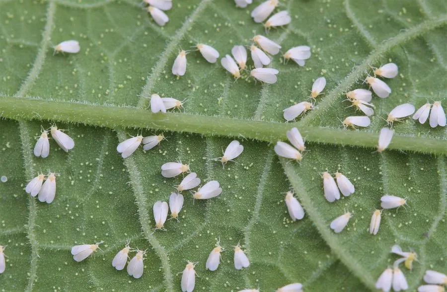

昆虫 · 动物界
烟粉虱 Bemisia tabaci

全球重大农业入侵害虫，体型极小、寄主极广，刺吸植物汁液并传播多种病毒，对蔬菜和棉花危害严重。
- 分类
- 门节肢动物门纲昆虫纲目半翅目科粉虱科属粉虱属
- 栖息环境
- 农田、菜地、温室、果园与花卉种植区
- 地理分布
- 全球热带、亚热带和温带地区，中国各地普遍发生
- 保护级别
- IUCN 暂无评估；中国外来入侵物种，无保护级别
物种志
烟粉虱成虫体长仅 1 毫米左右，体色淡黄，翅和体表覆盖白色蜡粉，外观与温室白粉虱相似但体型更小；卵、若虫和蛹都生活在叶片背面，若虫扁平、固定吸食，老熟若虫形成椭圆形蛹壳。它实际上是一个包含多个隐存种的复合种，不同生物型的寄主范围和传毒能力差异很大。
它呈世界性分布，在中国南方和北方均有发生，寄主植物超过 600 种，包括棉花、番茄、黄瓜、烟草、花卉等。成虫和若虫刺吸植物汁液，导致叶片褪绿、萎蔫，分泌蜜露引发煤污病；更严重的是它能传播番茄黄化曲叶病毒、棉花曲叶病毒等多种植物病毒，造成大面积减产。它一年可发生多代，繁殖速度快，抗药性强。防治上强调培育无虫苗、黄板诱杀、释放天敌和科学用药；它被列入中国外来入侵物种名单，是农业重点防控对象。
形态与习性
- 食性成虫和若虫吸食植物汁液
- 体长成虫约 1 mm
- 寿命一代约 2–3 周，一年可发生多代
- 繁殖卵生，繁殖速度快，世代重叠
- 活动节律白天活动，多在叶背取食
- 危害刺吸汁液并传播番茄黄化曲叶病毒等多种植物病毒
趣味知识
- 烟粉虱其实是一个包含多个隐存种的复合种，不同类群传毒能力不同。
- 它能传播番茄黄化曲叶病毒等植物病毒，危害比直接吸食汁液更严重。
- 烟粉虱繁殖快、抗药性强，是农业上最难防治的害虫之一。